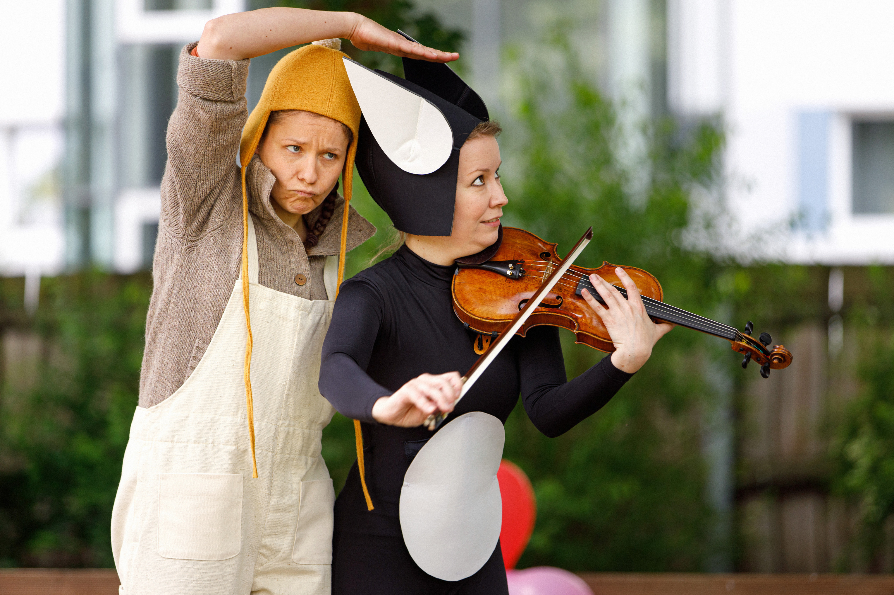

Theaterstück
Nils Karlsson Däumling
Sächsische Staatsoper, Dresden 2021
Nils Karlsson Däumling ist eine kurze Oper von Thierry Tidrow nach der Geschichte von Astrid Lindgren. Es handelt sich hierbei um eine mobile Produktion, die speziell für Kindergärten konzipiert wurde. Das Stück handelt von dem einsamen Kind Bertil, das sich eines Tages einen Freund imaginiert. Zusammen bauen sie sich eine Fantasiewelt auf und erleben Abenteuer.
- 


×

❮
❯
Regie
Julia B.-Malthet
Dramaturgie
Kai Weßler
Theaterpädagogik
Katrin Meraner
Bühnen- und Kostümbild
Hanna Zeyer